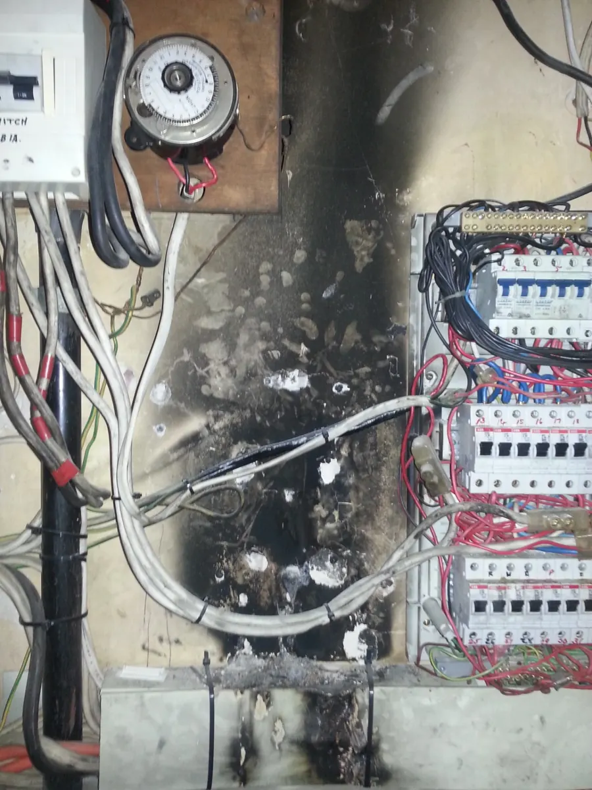

Electrical Fault Finding & Repairs
Find the cause before replacing parts. Tripping circuits, lost power and intermittent electrical problems traced methodically so the next repair is based on evidence, not a guess.
Urgent electrical danger or sudden serious fault? Call our 24/7 emergency line. Attendance depends on availability and site conditions.
When to book electrical fault finding.
A tripping device, dead circuit or flickering light tells you something is wrong. It does not tell you which part needs repairing.
Safety switch or breaker trips
An RCD, RCBO or circuit breaker operates repeatedly, or a circuit will not stay on.
Power lost in one area
Dead powerpoints, lighting or a section of a home, café, shop or other installation.
Intermittent problems
Lights flicker or a circuit works some days and fails under particular conditions.
Damp or weather-related faults
Problems that appear after rain, at outdoor equipment or where moisture may be relevant.
Unexplained electrical failures
A circuit, fitting or connected item stops working and the cause is not obvious.
Commercial electrical faults
Electrical issues affecting trading, equipment or part of a local business premises.
Find the cause before deciding the repair.
A safety switch operating is a symptom, not a diagnosis. The fault may relate to fixed wiring, connected equipment, a fitting, a connection, moisture or another part of the installation.
We narrow down what is affected, inspect and test appropriately, then explain what the results mean. If a simple repair is safe and agreed, it may be done during the visit. Larger or uncertain work is discussed before proceeding.

How a fault-finding visit works.
Describe the symptom
Tell us when it started, what is affected, whether it is intermittent and if anything recently changed.
Inspect and test
Identify the relevant circuits and equipment, then work through an appropriate diagnostic approach.
Explain the findings
Separate what testing has established from anything that still needs investigation.
Agree on the repair
Complete suitable agreed repairs or discuss the next scope, parts and any further testing.
Diagnostic visit vs repair quote
Unknown faults are charged as diagnostic attendance because the full repair scope is not yet known. Before booking we confirm the current minimum, further hourly charges, GST and chargeable travel time. Parts or repair work can cost extra.
Preparing for the visit
Send the suburb, the affected rooms or equipment, when the fault happens and safe-to-take photos. You do not need to diagnose the fault yourself.
Real electrical fault and testing images.
These are work-archive images, not stock photos. A photograph on its own cannot establish the cause of a fault or prove the job took place in a particular suburb.


Diagnosis, emergency help or a planned upgrade?
Different electrical jobs need different first steps.
Unknown fault → diagnostic visit
For tripping, dead circuits and intermittent problems, start with fault finding and agree the repair after the cause is understood.
Urgent danger → call directly
For sparking, burning smells, serious water damage or sudden dangerous power problems, call 0424 157 002. You can also see our separate Byron Bay emergency-electrician website.
Known board problem → switchboard assessment
For planned board replacement, circuit protection or capacity for new equipment, see Switchboard upgrades.
Who should investigate a power outage?
Before booking, check whether your neighbours or the wider street have also lost supply. Wider outages may be handled by the electricity network operator. A partial loss of power on your property can require an electrician's diagnosis.
If you suspect downed or damaged power lines, stay clear and contact the network operator or emergency services.
Electrical fault-finding FAQs.
Can you find out why my safety switch keeps tripping?
Yes. Repeated RCD or breaker tripping needs diagnosis rather than repeated resets. Testing helps narrow down which circuit or connected equipment is involved and what action is appropriate.
What happens at a fault-finding visit?
We start with the symptoms and affected area, then carry out appropriate inspection and electrical testing. Once the cause can be identified, we explain the findings and repair options. Some intermittent faults require further investigation.
How is fault finding charged?
An unknown fault starts with diagnostic attendance, not a fixed-price repair quote. We confirm the current minimum attendance, subsequent hourly rate, GST treatment and any charged travel time before booking. Repairs and materials may be additional.
Can you repair the fault on the same visit?
Often a straightforward repair can be completed during attendance if it is safe, parts are available and the scope is agreed. More involved repairs are discussed or quoted after diagnosis.
What if only part of my home or business has lost power?
Partial power loss can involve a circuit or equipment on the property. We can assess the affected installation. If the problem is with the electricity network, the network operator may be responsible instead.
Do you investigate faults that only happen occasionally?
Yes. Intermittent faults are investigated using the reported conditions and appropriate testing, but they can take longer to reproduce and sometimes require a return visit.
Can I send photos before you attend?
Yes. Send your suburb, a description of what stopped working and photos of the switchboard or affected equipment where it is safe to do so. Do not remove covers or touch damaged wiring to take photos.
Fault finding across nearby Northern Rivers.
Electrical diagnosis and repairs for homes and businesses around Byron Bay and surrounding towns, subject to the job and availability.
Tell us what is happening.
A suburb, the symptoms and a few safe photos are enough to begin the conversation. We will confirm the appropriate booking pathway and charges.